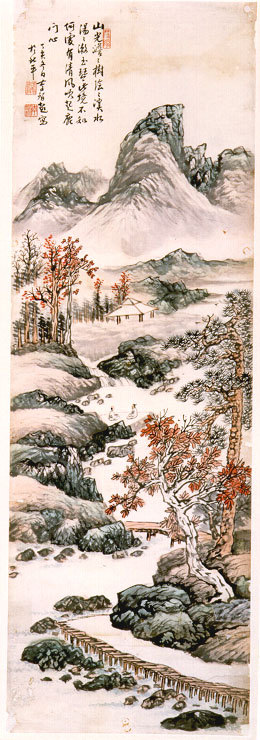

義助慰安婦 —— 李敖百件珍藏義賣藝術品（第99件） 品 名： I12. 李智超「山光澹澹圖」 預估價： 6 萬 成交價： 10 萬 說 明： 這是李敖家族收藏的書畫中，唯一被帶到台灣的珍品，作者是前北京藝專校長李智超，上有題詩，為一中規中矩、秀麗可愛的畫作。李敖從小就看著這幅畫掛在家中的牆壁上，已超過五十年的歷史。這幅國畫對李敖具有特殊紀念意義，因此在這次義賣中特別歸屬於胡適、李敖紀念品類，而不屬於中國書畫類。 
這是李敖家族收藏的書畫中，唯一被帶到台灣的珍品，作者是前北京藝專校長李智超，上有題詩，為一中規中矩、秀麗可愛的畫作。李敖從小就看著這幅畫掛在家中的牆壁上，已超過五十年的歷史。這幅國畫對李敖具有特殊紀念意義，因此在這次義賣中特別歸屬於胡適、李敖紀念品類，而不屬於中國書畫類。